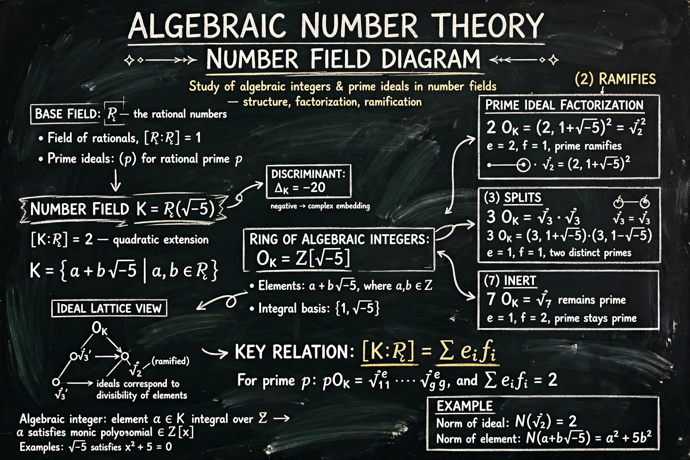

Algebraic number theory is a branch of number theory that uses abstract algebra to study integers, rational numbers and their generalisations in number fields. Its central objects are algebraic number fields and their rings of integers.

The subject grew from attempts to prove Fermat's Last Theorem. Kummer's work on cyclotomic fields introduced ideal numbers after unique factorisation was found to fail; Dedekind recast these as ideals, founding the modern theory. Gauss's work on quadratic forms and reciprocity, and Dirichlet's theorems on primes in arithmetic progressions and units, are other roots.
A number field is a finite extension of the rationals ℚ. Its ring of integers consists of elements satisfying monic integer polynomials. Ideals factor uniquely into prime ideals even when elements do not factor uniquely; the ideal class group measures that failure, and its size, the class number, is finite. Dirichlet's unit theorem describes the units of the ring.
The field connects deeply with algebraic geometry and the Langlands program.
See also: Number theory, Richard Dedekind